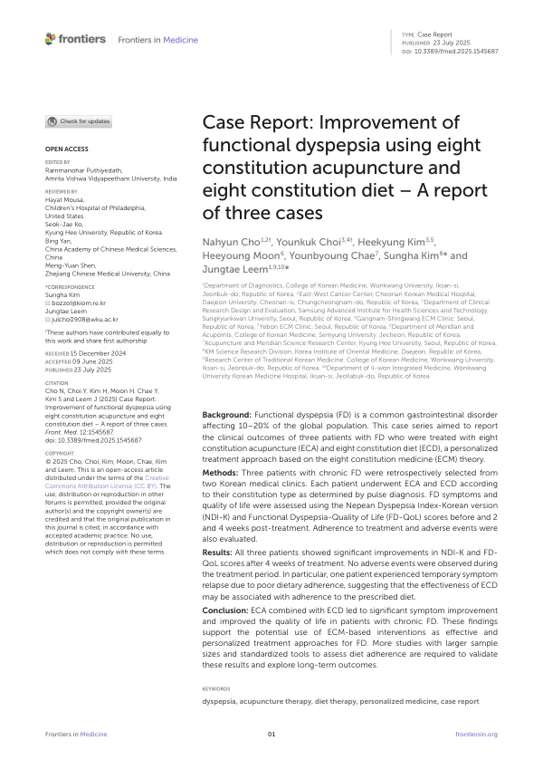

Case Report: Improvement of functional dyspepsia using eight constitution acupuncture and eight constitution diet – A report of three cases
Cho N, Choi Y, Kim H, Moon H, Chae Y, Kim S, Leem J
Frontiers in Medicine 12:1545687

첫 장 · 오픈액세스First page · open access
논문 소개Summary
기능성 소화불량은 세계 인구의 10~20%가 겪는 흔한 소화기 질환입니다. 검사에서 뚜렷한 이상이 나오지 않으므로 증상으로 판단하고 증상으로 평가할 수밖에 없습니다. 이 증례군은 8체질의학 이론에 따라 체질침과 체질식을 함께 쓴 세 사람의 경과를 담았습니다.
세 사람 모두 오래된 소화불량으로 침과 한약, 양약 치료를 되풀이했으나 뚜렷한 호전이 없었고, 식습관 관리가 되지 않아 좋아졌다 나빠졌다를 되풀이하던 상태였습니다. 두 한의원에서 후향적으로 골랐는데, 선택 비뚤림을 막기 위해 치료 결과를 모르는 상태에서 선정했습니다. 맥진으로 체질을 정하고 체질마다 다른 체질침 처방과 체질식 지침을 주었습니다. 평가는 네판 소화불량 지수 한국어판과 기능성 소화불량 삶의 질 척도로 치료 전과 2주, 4주에 했습니다.
4주 뒤 세 사람 모두 증상과 삶의 질이 뚜렷하게 좋아졌고 치료 기간에 이상반응은 없었습니다. 그런데 두 번째 환자의 경과가 눈에 띕니다. 이 환자는 2주까지 식이를 잘 지켜 빠르게 좋아졌으나 이후 방심해 아이스커피 같은 옛 습관으로 돌아갔고, 4주 시점에 증상과 삶의 질 점수가 다시 나빠졌습니다. 첫 번째와 세 번째 환자는 4주 내내 식이를 지켜 계속 좋아졌습니다.
저자들이 짚은 대목이 하나 더 있습니다. 두 번째와 세 번째 환자는 정반대의 식이 권고를 받았는데 둘 다 증상이 나아졌습니다. 그렇다면 이 효과를 일반적인 식이 조절만으로 설명하기는 어렵습니다.
한계는 분명합니다. 세 사람이고 대조군이 없으며, 체질침과 체질식을 함께 썼으므로 각각의 몫을 가를 수 없습니다. 식이 순응도는 환자가 스스로 보고한 것입니다. 저자들도 둘을 갈라 보려면 대조 연구가 필요하다고 적었습니다.
Functional dyspepsia affects 10 to 20% of the world's population. Since investigation turns up nothing definite, it must be judged and assessed by symptoms. This case series follows three patients treated with eight constitution acupuncture and an eight constitution diet, following eight constitution medicine theory.
All three had long-standing dyspepsia for which they had undergone repeated acupuncture, herbal medicine and pharmacological treatment without significant improvement, cycling between relief and relapse as dietary management slipped. They were selected retrospectively from two Korean medicine clinics, chosen without prior knowledge of treatment outcomes to prevent selection bias. Constitution type was determined by pulse diagnosis, and each received a different acupuncture prescription and dietary protocol accordingly. Assessment used the Nepean Dyspepsia Index-Korean version and the Functional Dyspepsia-Quality of Life scale before treatment and at two and four weeks.
At four weeks all three showed clear improvement in symptoms and quality of life, with no adverse events during the treatment period. The second patient's course stands out. She adhered closely to the diet for the first two weeks and improved rapidly, then became complacent and reverted to old habits such as iced coffee, and her symptom and quality-of-life scores worsened by week four. The first and third patients maintained adherence across all four weeks and continued to improve.
The authors note one further point. The second and third patients followed entirely opposite dietary recommendations, and both experienced relief. That makes the effect hard to explain by generic dietary modification alone.
The limitations are plain: three patients, no control group, and acupuncture and diet administered concurrently so their independent effects cannot be separated. Dietary adherence was self-reported. The authors state that controlled studies are needed to tell the two apart.
인용Cite
Cho N, Choi Y, Kim H, Moon H, Chae Y, Kim S, Leem J. Case Report: Improvement of functional dyspepsia using eight constitution acupuncture and eight constitution diet – A report of three cases. Frontiers in Medicine. 2025;12:1545687. doi:10.3389/fmed.2025.1545687